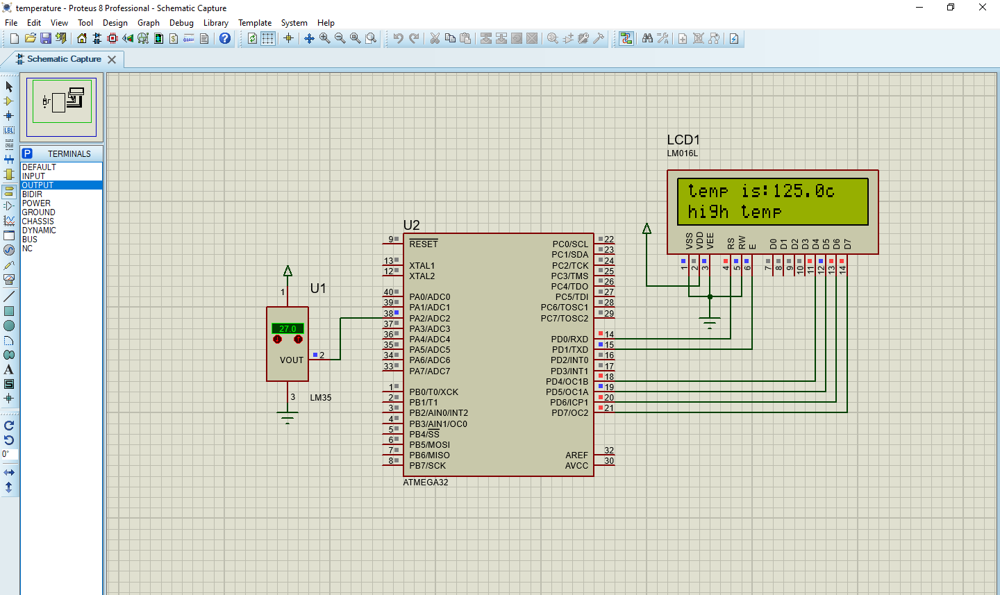

Temperature Monitoring System
This project involves monitoring temperature using a temperature sensor interfaced with a microcontroller, specifically an ATmega32. The temperature reading is displayed on a 16x2 character LCD screen. Additionally, the system alerts users if the temperature exceeds certain thresholds.
[Project github link]
Hardware Components
- ATmega32 microcontroller
- 16x2 character LCD display
- Temperature sensor
- Crystal oscillator (8MHz)
Diagram and code

Functionality
The microcontroller reads the analog voltage from the temperature sensor using the ADC. It then converts this voltage into temperature in degrees Celsius and displays it on the LCD screen. Additionally, the system checks if the temperature exceeds predefined thresholds (30°C for high temperature and 15°C for low temperature) and provides alerts accordingly.
Code Overview
The code configures the ADC to read from a specified pin connected to the temperature sensor. It continuously reads the analog voltage, converts it to temperature, and displays the result on the LCD screen. It also checks for high and low temperature conditions and displays corresponding messages.
Conclusion
This temperature monitoring system demonstrates the use of a microcontroller to interface with a sensor and provide real-time temperature readings. It can be deployed in various applications such as environmental monitoring, industrial automation, and HVAC systems to ensure optimal temperature conditions.